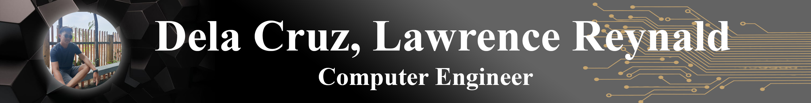

About Me
Hello there! My name is Lawrence Reynald Dela Cruz, and I'm thrilled to share a bit about myself through my portfolio.
As a recent graduate of Bachelor of Science in Computer Engineering from Bulacan State University, I am equipped with a solid foundation in computer engineering principles and a passion for technology. Throughout my academic journey, I have gained valuable knowledge and hands-on experience in areas such as programming languages, microcontrollers, networking, and software development.
During my time at university, I actively engaged in various projects and collaborative initiatives that allowed me to apply my theoretical knowledge in practical settings. These experiences have helped me develop strong problem-solving skills, an analytical mindset, and a keen attention to detail.
I am particularly enthusiastic about exploring emerging technologies and their potential to drive innovation and change. My curiosity and drive to stay updated with the latest industry trends motivate me to continuously learn and expand my skill set.
Through my portfolio, I aim to showcase my technical prowess, creative thinking, and the projects I have worked on. I believe in delivering solutions that not only meet the clients' needs but also exceed their expectations. I enjoy working in collaborative environments and thrive on challenges that push me to think outside the box.
Thank you for visiting my portfolio and taking the time to learn about my journey. I am excited to connect with potential clients, employers, and collaborators who share my passion for technology and its transformative power. If you have any questions or would like to discuss potential opportunities, please feel free to reach out.